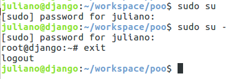

Suporta a criação de comandos complexos a partir de comandos menores: scripts
Comandos integrdos (break, cd, exec) e externos
Fluxos de E/S
stdin: fluxo de entrada padrão
Fornece entrada para os comandos
stdout
Mostra a saída dos comandos
stderr
Mostra a saída de erros do comando
Usuário vs. Superusuário
Superusuário: root
Use com cautela

Hello World!
user@hostname:$ echo Hello World!
Hello World!
user@hostname:$ echo Palavra
Palavra
user@hostname:$ echo Onde estão os meus espaços?
Onde estão os meus espaços?
user@hostname:$ echo "Aqui estão os meus espaços!"
Aqui estão os meus espaços!
Sequências de Comandos
Operador &&: executa o segundo comando somente se o primeiro retornar código de saída igual 0 (executado com sucesso)
Operador ||: executa o segundo comando somente se o primeiro retornar código de saída diferente de 0